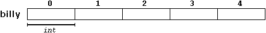
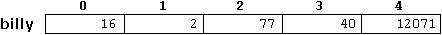
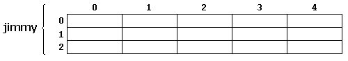
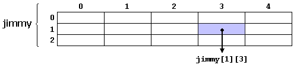
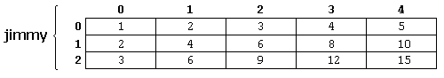

|
Section 3.1 Arrays |
 |
|
| |
|
Section 3.1 Arrays |
|
|
| |
Arrays are a series of elements (variables) of the same type placed consecutively in memory that can be individually referenced by adding an index to a unique name.
That means that, for example, we can store 5 values of type int without having to declare 5 different variables each one with a different identifier. Instead of that, using an array we can store 5 different values of the same type, int for example, with an unique identifier.
For example, an array to contain 5 integer values of type int called
billy could be represented this way:
where each blank panel represents an element of the array, that in this case are integer values of type int. These are numbered from 0 to 4 since in arrays the first index is always 0, independently of its length .
Like any other variable, an array must be declared before it is used. A typical declaration
for an array in C++ is:
type name [elements];where type is a valid object type (int, float...), name is a valid variable identifier and the elements field, that goes enclosed within brackets [], specifies how many of these elements does contain the array.
Thus, to declare billy as shown above it would be something as simple as the
following sentence:
int billy [5];
| NOTE: The elements field within brackets [] when declaring an array must be a constant value, since arrays are blocks of static memory of a given size and the compiler must be able to determine exactly how much memory must assign to the array before any instruction is considered. |
If we declare a global array (outside any function) its content will be initialized
with all its elements filled with zeros. Thus, if in the global scope we declare:
int billy [5];every element of billy will be set initialy to 0: But additionally, when we declare an Array, we have the possibility to assign initial values to each one of its elements using curly brackets { }. For example:
int billy [5] = { 16, 2, 77, 40, 12071 };this declaration would have created an array like the following one:
The number of elements in the array that we initialized within curly brackets { } must match the length in elements that we declared for the array enclosed within square brackets [ ]. For example, in the example of the billy array we have declared that it had 5 elements and in the list of initial values within curly brackets { } we have set 5 different values, one for each element.
Because this can be considered an useless repetition, C++ includes the possibility of
leaving empty the brackets [ ], being the size of the Array defined by the
number of values included between curly brackets { }:
int billy [] = { 16, 2, 77, 40, 12071 };
name[index]Following the previous examples in which billy had 5 elements and each of those elements was of type int, the name which we can use to refer to each element is the following one: For example, to store the value 75 in the third element of billy a suitable sentence would be:
billy[2] = 75;and, for example, to pass the value of the third element of billy to the variable a, we could write:
a = billy[2];Therefore, for all the effects, the expression billy[2] is like any variable of type int. With the same properties.
Notice that the third element of billy is specified billy[2], since first is billy[0], second billy[1], and therefore, third is billy[2]. By this same reason, its last element is billy[4]. Since if we wrote billy[5], we would be acceding to the sixth element of billy and therefore exceeding the size of the array.
In C++ it is perfectly valid to exceed the valid range of indices for an Array, which can cause certain difficultly detectable problems, since they do not cause compilation errors but they can cause unexpected results or serious errors during execution. The reason why this is allowed will be seen ahead when we begin to use pointers.
At this point it is important to be able to clearly distinguish between the two uses that brackets [ ] have related to arrays. They perform two differt tasks: one, is to set the size of arrays when declaring them; and second, to specify indices for a concrete array element when referring to it. We must simply take care of not confusing these two possible uses of brackets [ ] with arrays:
int billy[5]; // declaration of a new Array (begins with a type name) billy[2] = 75; // access to an element of the Array.
Other valid operations with arrays:
billy[0] = a;
billy[a] = 75;
b = billy [a+2];
billy[billy[a]] = billy[2] + 5;
// arrays example
#include <iostream.h>
int billy [] = {16, 2, 77, 40, 12071};
int n, result=0;
int main ()
{
for ( n=0 ; n<5 ; n++ )
{
result += billy[n];
}
cout << result;
return 0;
}
| 12206 |
jimmy represents a bidimensional array of 3 per 5 values of type int. The way to declare this array would be:
int jimmy [3][5];and, for example, the way to reference the second element vertically and fourth horizontally in an expression would be:
jimmy[1][3]Multidimensional arrays are not limited to two indices (two dimensions). They can contain so many indices as needed, although it is rare to have to represent more than 3 dimensions. Just consider the amount of memory that an array with many indices may need. For example:

(remember that array indices always begin by 0).
char century [100][365][24][60][60];assigns a char for each second contained in a century, that is more than 3 billion chars! What would consume about 3000 megabytes of RAM memory if we could declare it.
Multidimensional arrays are nothing else than an abstraction, since we can simply obtain
the same results with a simple array by putting a factor between its indices:
int jimmy [3][5]; is equivalent towith the only difference that the compiler remembers for us the depth of each imaginary dimension. Serve as example these two pieces of code, with exactly the same result, one using bidimensional arrays and the other using only simple arrays:
int jimmy [15]; (3 * 5 = 15)
// multidimensional array
#include <iostream.h>
#define WIDTH 5
#define HEIGHT 3
int jimmy [HEIGHT][WIDTH];
int n,m;
int main ()
{
for (n=0;n<HEIGHT;n++)
for (m=0;m<WIDTH;m++)
{
jimmy[n][m]=(n+1)*(m+1);
}
return 0;
}
|
// pseudo-multidimensional array
#include <iostream.h>
#define WIDTH 5
#define HEIGHT 3
int jimmy [HEIGHT * WIDTH];
int n,m;
int main ()
{
for (n=0;n<HEIGHT;n++)
for (m=0;m<WIDTH;m++)
{
jimmy[n * WIDTH + m]=(n+1)*(m+1);
}
return 0;
}
|
none of the programs above produce any output on the screen, but both assign values to the memory block called jimmy in the following way:
We have used defined constants (#define) to simplify possible future modifications of the program, for example, in case that we decided to enlarge the array to a height of 4 instead of 3 it would be enough by changing the line:
#define HEIGHT 3by
#define HEIGHT 4with no need to make any other modifications to the program.
In order to admit arrays as parameters the only thing that we must do when declaring the function is to specify in the argument the base type for the array that it contains, an identifier and a pair of void brackets []. For example, the following function:
void procedure (int arg[])admits a parameter of type "Array of int" called arg. In order to pass to this function an array declared as:
int myarray [40];it would be enough with a call like this:
procedure (myarray);
Here you have a complete example:
// arrays as parameters
#include <iostream.h>
void printarray (int arg[], int length) {
for (int n=0; n<length; n++)
cout << arg[n] << " ";
cout << "\n";
}
int main ()
{
int firstarray[] = {5, 10, 15};
int secondarray[] = {2, 4, 6, 8, 10};
printarray (firstarray,3);
printarray (secondarray,5);
return 0;
}
|
5 10 15 2 4 6 8 10 |
As you can see, the first argument (int arg[]) admits any array of type int, wathever its length is, for that reason we have included a second parameter that says to the function the length of each array that we pass to it as the first parameter so that the for loop that prints out the array can know the range to check in the passed array.
In a function declaration is also possible to include multidimensional arrays.
Its format for a tridimensional one is:
base_type[][depth][depth]for example, a function with a multidimensional array as argument could be:
void procedure (int myarray[][3][4])notice that the first brackets [] are void and the following ones not. This must always be thus because the compiler must be able to determine within the function which is the depth of each additional dimension.
Arrays, both simple or multidimensional, passed as function parameters are a quite common source of errors for less experienced programmers. I recommend the reading of chapter 3.3, Pointers for a better understanding of how arrays operate.
| © The C++ Resources Network, 2000-2001 - All rights reserved |
 Previous:
Previous:2-3. Functions (II). |
 index |
Next: 3-2. Strings of characters. |